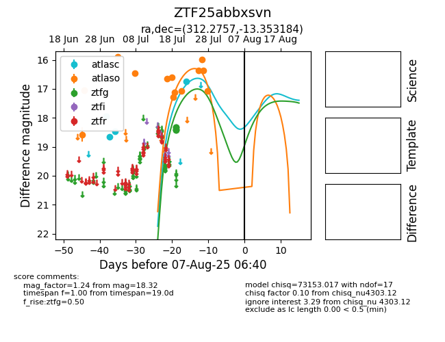

Target ZTF25abbxsvn at 2025-08-07 07:30, see:
FINK: fink-portal.org/ZTF25abbxsvn
Lasair: lasair-ztf.lsst.ac.uk/objects/ZTF25abbxsvn
ALeRCE: alerce.online/object/ZTF25abbxsvn
alt names
ZTF25abbxsvn (ztf,fink)
coordinates:
equatorial (ra, dec) = (312.2757,-13.35318)
galactic (l, b) = (33.7672,-32.04674)
photometry
last atlasc=16.75, atlaso=17.06, ztfg=18.32
4 atlasc, 13 atlaso, 5 ztfg detections
